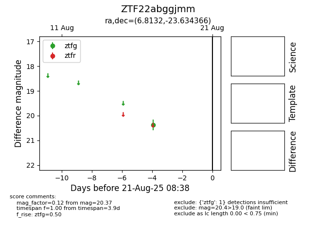

Target ZTF22abggjmm at 2025-08-21 08:38, see:
FINK: fink-portal.org/ZTF22abggjmm
Lasair: lasair-ztf.lsst.ac.uk/objects/ZTF22abggjmm
ALeRCE: alerce.online/object/ZTF22abggjmm
alt names
ZTF22abggjmm (ztf,alerce)
coordinates:
equatorial (ra, dec) = (6.8132,-23.63437)
galactic (l, b) = (64.2090,-83.51714)
photometry
last ztfg=20.37
1 ztfg detections
